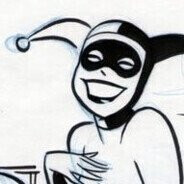

Little snippets of text about various topics related to the site or my art.
About me
 Welcome to the site, I am Chaussettes. This site just exists to be a self-hosted gallery of all my artwork. I used to post exclusively on DeviantArt but the quality of DA has steadily dropped over recent years and it has got to a point where DA would display explicit pornographic ads on the sidebar of some of the images in my gallery. I'm not going to expose random people to that kind of stuff and a number of other changes to DA in general have chased me away. Your options for hosting your artwork online are actually very limited and DeviantArt is the only truely free portfolio style site, so my only other option was to host a site myself. I had already been playing with building my own site prior to moving away so I just rewrote the code and moved everything here.I have no prior experience building a website but it was fairly easy to figure out and put together using plain HTML and CSS. This site's source code can be viewed on GitHub and you are free to download and modify it if you want.
A few artistic inspiriations I want to mention include Omar Dogan, Bruce Timm, Gil Elvgren and Romain Hugault. These are all artists who focus on the niche of portraiture and pinup style art and I am a very big fan and follower of all of them. Omar is my GOAT and it was a very big inspiration when I was just starting to be able to look at the artwork of these people and say "I want to be able to draw like that one day."
Why this site exists
I first experimented with writing my own website sometime in early or mid 2022 as a side hobby. -- (babby's first site) -- During this timeframe, DeviantArt, the place I had been hosting my art for years, took a sharp nosedive in quality with more aggressive monetization and a torrential flood of AI generated images all over the site. Fast forward to 2024: These problems are now mixing and explicitly pornographic AI generated images are being displayed as ads on the sidebar of my artwork. I'm not trying to expose people that just want to look at my portraits/landscapes to that kind of stuff and there's no way for me to control what DeviantArt wants to display as ads on my showcase so I'm forced to find another site or write my own.
The problem here is there really is no where else to go as someone who just wants to put up their art in a gallery form on any other existing website. ArtStation is the big contender to DeviantArt, but it is paywalled with a monthly fee and file size limits. Newgrounds suffers from the same reputation of being a fetish art haven that DeviantArt does. Instagram and Twitter are the best chance at gaining an audience if that's what you're into, but they suck at making your artwork easily browsable. There's no where else to go other than write your own site.
A significant bonus to writing your own site however is permanence. I write and control the source code to the site, neocities is just a host with no code specification or requirements. This means if neocities ever goes under for whatever reason, I can easily just get my own domain or find another site hosting service and everything will look and function exactly the same as it does here. This is actually an insane bonus to stuff like DeviantArt or Newgrounds because I was always horrified that these sites were going to disappear one day and I would have just lost multiple years worth of work. I do not have that problem anymore with hosting my own site.
Having your own piece of the internet to put stuff onto is also cool. Other artist's websites that I frequently visit and that have directly inspired the development of this site are https://www.androidarts.com/ and https://clowncorps.net/
Tools
I use the program Krita as my primary and only piece of software for creating digital art. I started with GIMP but quickly figured out why GIMP is classed as an image manipulation tool like Photoshop and not a digital art program. I started using Krita in about 2020 and have not had a single complaint with it so far.
I settled on Krita for a few reasons. First and foremost is cost: Krita is free. Adobe's reign of terror over the digital creative landscape is crumbling as more people realize the free alternatives are just as good if not better than the things they're paying monthly subscriptions for. Artists who double as software devs contribute to Krita as it's open-source because it only makes sense to improve your own tool. Everyone wins in this feedback-loop situation. Another big factor in my choice is availability. I've used linux as my only desktop OS since about 2019 and the Adobe creative suite is simply not available for linux, they don't make linux binaries. I've seen cracked Photoshop running under WINE on linux, but Krita does the job just as well without having to jump through WINE prefix labyrinths. Finally, Krita's default featureset is solid. The default brushes are the best I've ever seen in a digital art program and every major version keeps adding more. The watercolor brushes look authentic, same goes for pencils. The creative tools are great.
I do not own and have never owned a drawing tablet, I draw with a mouse. Some people find this unbelievable because they've been told for years that you cannot produce any kind of quality material without using a drawing tablet. That's simply not true and I will point to video games to give an example for this. Learning to draw with a mouse is as easy as learning to play video games with a mouse. For those of us who grew up playing with controllers on consoles, the transition to gaming with a mouse was a shock, but after a week or so you got over it. The same goes with drawing with a mouse. The first week or two is awkward but after a month or so you stop thinking about it and it becomes just as natural as using the mouse to interact with the computer in any other way. Don't let people tell you that you have to spend $200+ on a drawing tablet if you can't afford it.
Understand however that drawing with a mouse is still different than drawing on a tablet. I can not produce smooth clean linework like other people can, a mouse is just too crude of a tool to do that with. I get around this personally by just not going for that kind of look. Charcoal and watercolor is messy, it's supposed to be. It doesn't matter if I'm messy with a mouse because it's genuine, it fits the style.
Katatonic colors for DF
This is a color scheme (and included tileset combo) for the game Dwarf Fortress I've been throwing together over time to help bring down the contrast of the game for players who primarily play in ASCII like myself. The new color scheme introduced in the Dwarf Fortress Steam release works well for the graphical UI but is absolutely eye-searing when trying to play with ASCII tiles. I have very strong astigmatism and prefer playing with a larger ASCII tileset to keep eyestrain to a minimum.
The colorscheme is something I've tweaked to my own liking over a long period of playing and the primary focus of it was to reduce the amount of pure #ffffff white color on the screen while keeping a solid #000000 black background. Using a non-black background color with DF introduces annoying black boxes in certain places of the UI ever since the DF 50+ UI overhaul. I was not able to find any way to tweak this behavior and the easiest way to get around it is just by sticking to a solid black background color. I think my colorscheme is a good balance of low-contrast colors while keeping a number of easily distinguishable saturated colors like pink, yellow and cyan to make important things pop.
The tileset is simply a 2x resized version of KMK's `KMK - W` tileset from this forum post. I just put it through Krita and resized it to 200% with nearest neighbor scaling to keep it crisp. There's a couple tiles I'm not a huge fan of and may edit myself one day but the tileset is great and keeps eyestrain to a minimum for me without distorting the new DF UI on a 1080p monitor like a lot of larger tilesets seem to do now.
Enjoy the game in crisp ASCII without sacrificing your eyes.